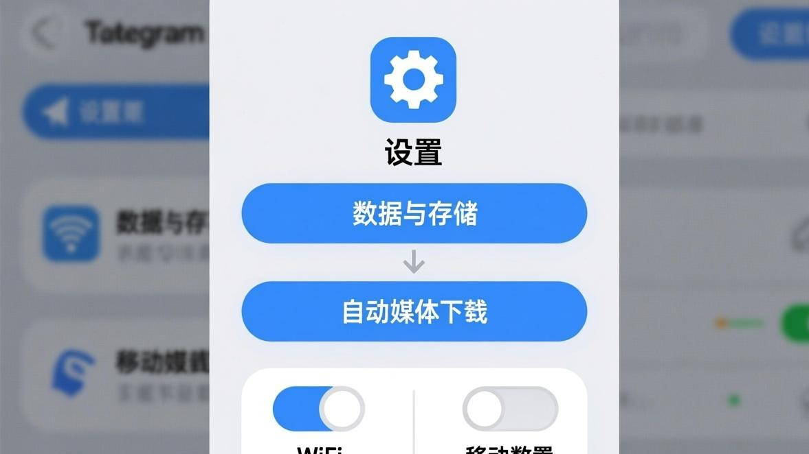
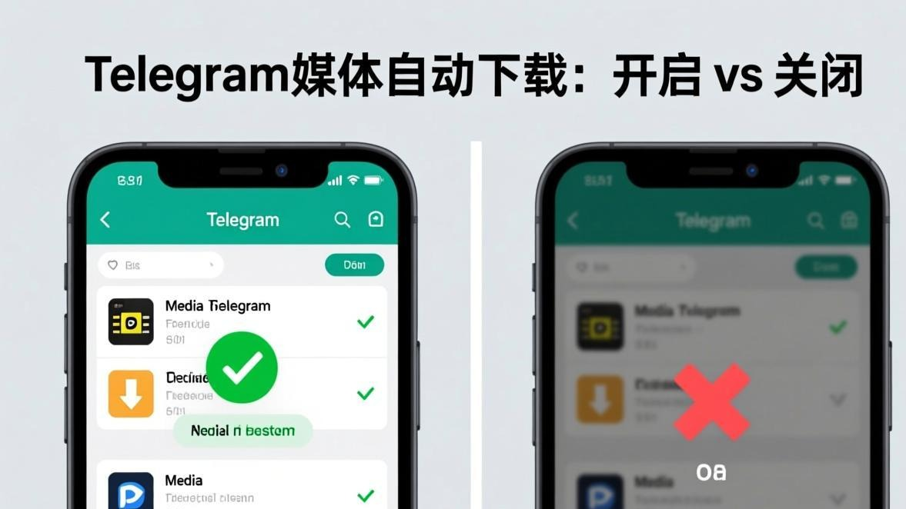

前阵子我手机流量超标了，查了一下流量使用情况，发现Telegram一个月吃了我快10GB的流量！我当时就懵了，我平时也就是用Telegram聊聊天，怎么就能用这么多流量？
后来研究发现，都是自动下载惹的祸。Telegram默认设置是：不管什么网络环境，只要有人发图片、视频、文档，它都会自动帮你下载。我在十几个群里，每天光是群里发的图片和视频就能有好几百MB。

更坑的是，自动下载开得太猛，还会导致图片加载出问题——就是那种图片一直转圈加载不出来的情况。今天就来聊聊Telegram的自动下载设置，怎么在保证使用体验的前提下，把流量和缓存都控制住。
自动下载到底在下载些什么？
在讲怎么设置之前，先搞清楚Telegram的自动下载到底在下载什么。很多人以为自动下载就只是下载图片，其实远不止这些。
Telegram的自动下载分这几类：

1. **照片**：就是聊天里发的图片。这个一般不大，一张图也就几百KB到几MB。
2. **视频**：这个就很吃流量了。一段10秒的视频可能就有几MB，长一点的视频能有几十MB甚至上百MB。
3. **文档**：包括PDF、Word、压缩包等等。文档的大小差别很大，小的几十KB，大的能到几GB。
4. **音频**：语音消息和音乐文件。语音消息一般不大，但是音乐文件可能就比较大了。
5. **语音聊天**：这个比较新，是Telegram后来加的功能。
6. **动画贴纸**：就是那些会动的贴纸。
你看，自动下载要下载的东西这么多，流量能不超标吗？而且下载这么多东西，缓存就会变大，缓存一大小，就容易出现图片转圈的问题。
自动下载的设置界面在哪里？
步骤 1
打开Telegram，进入「设置」
步骤 2
找到「数据和存储」（有时候叫「数据和使用」）
步骤 3
点「自动下载媒体」
步骤 4
你会看到三个选项：移动数据、WiFi、漫游
步骤 5
分别点进去，设置每种网络环境下的自动下载规则
这三个选项是什么意思呢？
**移动数据**：就是你用手机流量的时候（4G/5G）。这个一般建议关掉大部分自动下载，毕竟流量贵嘛。
**WiFi**：就是你连WiFi的时候。WiFi一般不限流量，所以可以开得宽松一些。
**漫游**：就是你出国的时候，用漫游流量。这个一定要全部关掉，漫游流量巨贵，千万别让它自动下载东西。
我的自动下载设置方案（供参考）
每个人的使用习惯不一样，自动下载的设置也没有标准答案。下面是我自己的设置方案，供大家参考：
**移动数据**： - 照片：关（我习惯需要的时候再手动点开图片） - 视频：关 - 文档：关 - 音频：关 - 语音聊天：关 - 动画贴纸：关
**WiFi**： - 照片：开（图片不大，而且看图体验比较好） - 视频：关（视频太吃带宽了，而且很多时候我不需要看群里发的视频） - 文档：开（文档一般不大，而且有时候需要快速查看） - 音频：关 - 语音聊天：关 - 动画贴纸：开
**漫游**： - 全部关掉（这个没得商量）
这个设置方案比较保守，优点是省流量、少缓存，缺点是需要看图片的时候得手动点一下。如果你觉得麻烦，可以把WiFi环境下的照片和文档都开着。
小贴士：
如果你经常在某个WiFi环境下使用Telegram（比如家里或者公司），可以把那个WiFi添加到「私人网络」列表里。私人网络可以有单独的自动下载设置，比如你可以设置家里WiFi自动下载所有媒体，公司WiFi只自动下载图片和文档。
关掉自动下载之后，图片转圈的问题真的能解决吗？
说实话，关掉自动下载确实能减少图片转圈的情况，但不是100%能解决。
原因是这样的：自动下载开得太猛，Telegram就会同时下载很多文件，导致带宽被分散。就好比一条水管，同时要供十几个水龙头出水，每个水龙头的水压就都变小了。图片加载就会变慢，甚至一直转圈。
关掉自动下载之后，Telegram就只会下载你当前正在看的图片，带宽集中使用，加载速度就会快很多。
但是，如果你关掉了自动下载，又同时手动点开很多图片（比如快速滑动聊天记录），那还是会出现转圈的情况。因为这时候Telegram又要同时下载多张图片，带宽还是会被分散。
所以，关掉自动下载只是一个辅助手段，要从根本上解决图片转圈的问题，还得配合其他优化方法。比如定期清理缓存（参考Telegram缓存清理指南），或者检查一下你的网络设置。
自动下载和手动下载的区别
有些朋友可能会问：自动下载和手动下载有什么区别？不都是下载图片吗？
区别还是挺大的：
**自动下载**：Telegram在后台自动帮你下载，你不需要做任何操作。优点是看图快（因为已经下载好了），缺点是费流量、占缓存。
**手动下载**：你得自己点一下图片，Telegram才会开始下载。优点是省流量、少缓存，缺点是看图稍微麻烦一点（要多点一下）。
另外，手动下载还有一个好处：你可以选择要不要下载某张图片。比如群里有人发了一些不太重要的图片，你就可以选择不点开，省得浪费流量和缓存。
当然，如果你实在不想手动点图片，也可以把自动下载开着，但是设置一个缓存大小限制。在「存储使用量」里可以设置缓存的最大大小，当缓存超过这个大小的时候，Telegram会自动清理最老的缓存文件。
一些进阶设置技巧
除了基本的自动下载设置，还有几个进阶技巧可以试试：
**1. 为不同的聊天设置不同的自动下载规则** Telegram目前不支持这个功能，但是你可以通过「例外」的方式来实现。比如在自动下载设置里，把照片关掉，但是对于重要的聊天（比如家人的聊天或者工作群），你可以手动把照片下载下来，然后Telegram会记住你的偏好。
**2. 使用「流量节省模式」** Telegram有个「流量节省模式」，开启之后会减少自动下载的频率，也会降低图片和视频的质量。开启方法：设置 > 数据和存储 > 流量节省模式。
**3. 设置「自动播放GIF」** 在自动下载设置里，有个「自动播放GIF」的选项。如果关掉这个选项，GIF就不会自动播放，需要你手动点一下才会播放。这样也能省不少流量和电量。如果你发现图片转圈分类里提到的GIF加载问题，可以试试关掉自动播放。
**4. 限制上传速度** 如果你经常需要发大文件，可以限制一下上传速度，避免上传占用太多带宽导致下载变慢。设置方法：设置 > 数据和存储 > 上传速度限制。
提醒：
修改自动下载设置之后，建议重启一下Telegram，让设置生效。有时候设置改了但是没生效，就是因为Telegram还在用旧的配置。
如果改了设置还是转圈怎么办？
如果你按照上面的方法改了自动下载设置，但是图片还是一直转圈，那可能是其他原因导致的。
这时候可以试试这几个方法：
1. **检查网络**：可能是你的网络本身就不太稳定。可以试试换个网络环境，或者开个VPN。
2. **清理缓存**：缓存太多也会导致图片加载慢。可以参考我们之前的教程，清理一下Telegram的缓存。
3. **更新Telegram**：如果你用的是比较老的版本，可能会有一些bug导致图片加载失败。去应用商店更新到最新版本试试。
4. **重装Telegram**：如果所有方法都没用，那就只能重装了。记得重装之前先备份重要的聊天记录。
如果还是不行，可以去图片转圈修复分类看看其他可能的解决方法，或者在评论区留言，看看其他用户有没有遇到同样的问题。
常见问题
常见问题
自动下载设置说到底就是在省流量和看图体验之间找平衡。每个人的平衡点不一样，没有最好的设置，只有最适合自己的设置。
我自己是偏向于省流量那一边，毕竟流量还是要钱的。而且现在国内流量虽然便宜了，但是也没便宜到可以随便造的地步。
如果你不太在意流量，那可以把WiFi环境下的自动下载都开着，这样看图体验会好很多。移动数据环境下，建议至少把视频的自动下载关掉，视频太吃流量了。
最后，如果你在设置自动下载的过程中遇到了什么问题，或者有什么好的设置方案想分享，欢迎在评论区留言。说不定你的方案能帮到其他人呢。
对了，如果你还遇到了其他Telegram使用方面的问题，比如缓存清理或者文件下载卡住，也可以看看我们其他的相关教程。
📱 立即下载 Telegram 最新版
更新到最新版本可修复大部分图片加载问题，官方正版安全无捆绑。